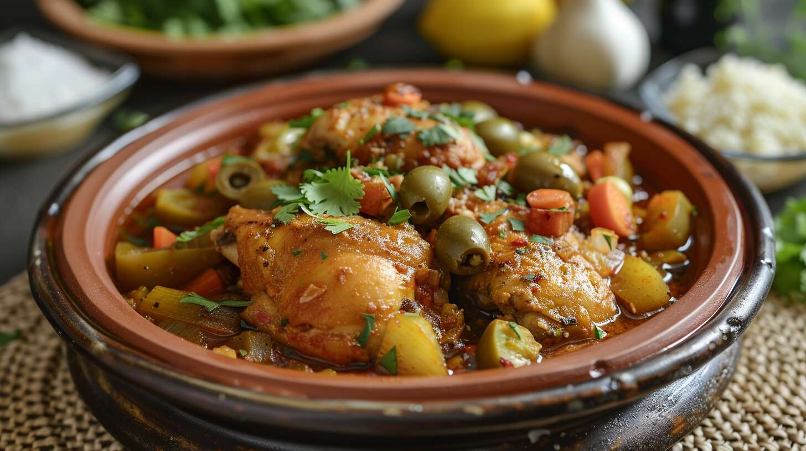

Tajine

A Moroccan dish in sauce that you eat with traditional Moroccan bread.
Try some and fall in love with Moroccan cuisine!
Ingredients
- 5 cloves garlic, finely chopped
- 1/4 teaspoon saffron threads, pulverized
- 1/2 teaspoon ground ginger
- 1 teaspoon sweet paprika
- 1/2 teaspoon ground cumin
- 1/2 teaspoon turmeric
- Salt and freshly ground black pepper
- 1 chicken, cut in 8 to 10 pieces
- 2 tablespoons extra virgin olive oil
- 3 medium onions, sliced thin
- 1 cinnamon stick
- 8 calamata olives, pitted and halved
- 8 cracked green olives, pitted and halved
- 1 large or 3 small preserved lemons (sold in specialty food shop)
- 1 cup chicken stock
- Juice of 1/2 lemon
- 1 tablespoon chopped flat-leaf parsley
Steps
- Mix garlic, saffron, ginger, paprika, cumin and turmeric together. If not using kosher chicken,
add 1/2 teaspoon salt. Add pepper to taste. Rub chicken with mixture, cover, refrigerate and marinate 3 to 4 hours.
- Heat oil in heavy skillet. Add chicken, and brown on all sides. Remove to platter. Add onions to skillet, and cook
over medium-low heat about 15 minutes, until lightly browned. Transfer to tajine, if you are using one, or leave in
skillet. Add cinnamon stick.
- Put chicken on onions. Scatter with olives. Quarter the lemons, remove pulp and cut skin in strips. Scatter over chicken.
Mix stock and lemon juice. Pour over chicken.
- Cover tajine or skillet. Place over low heat, and cook about 30 minutes, until chicken is done. Scatter parsley on top, and serve.